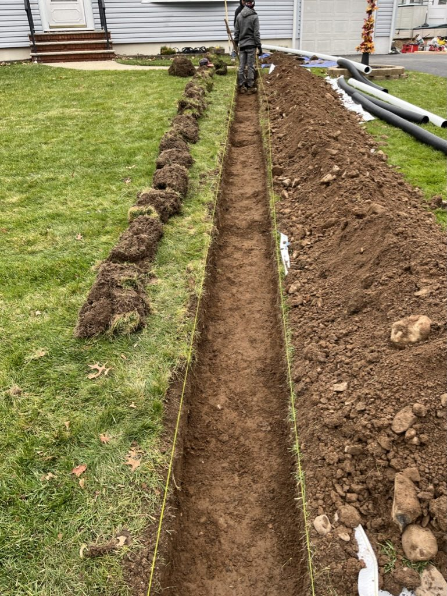
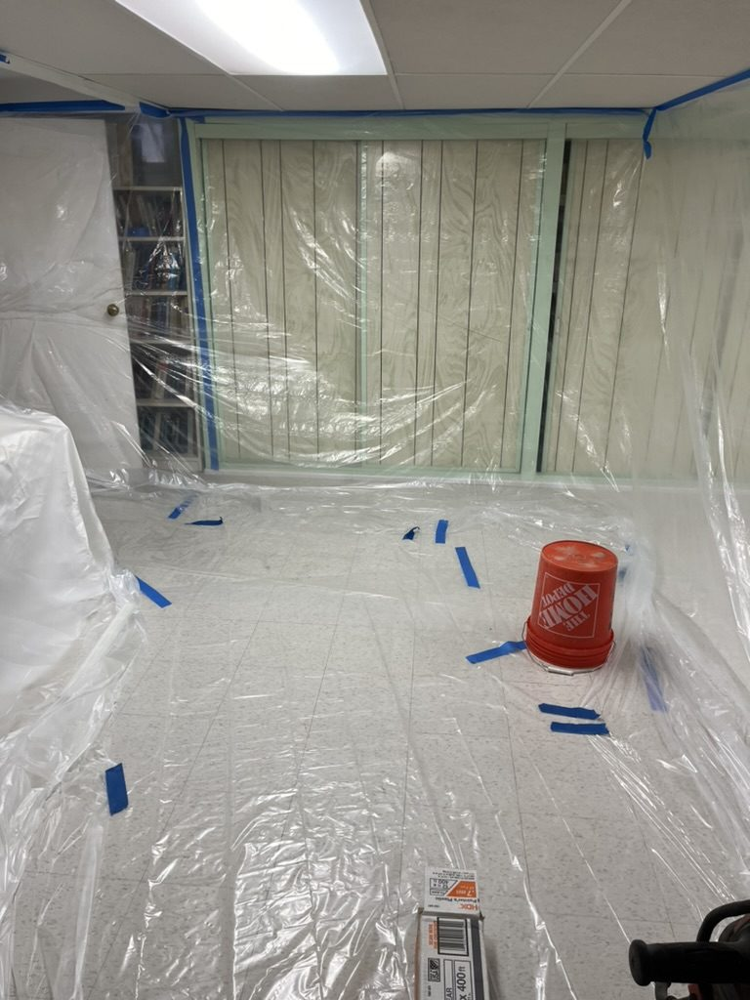
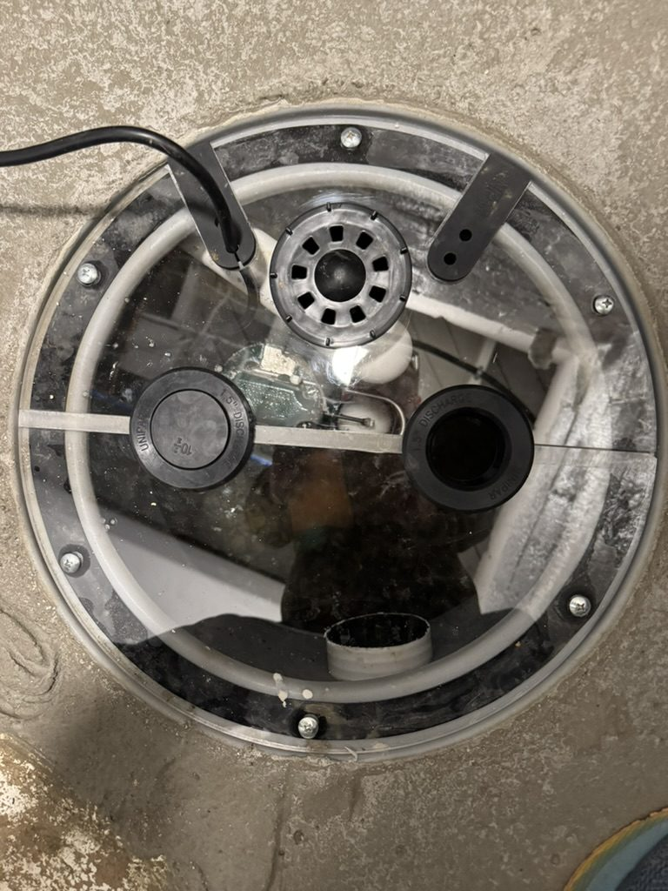
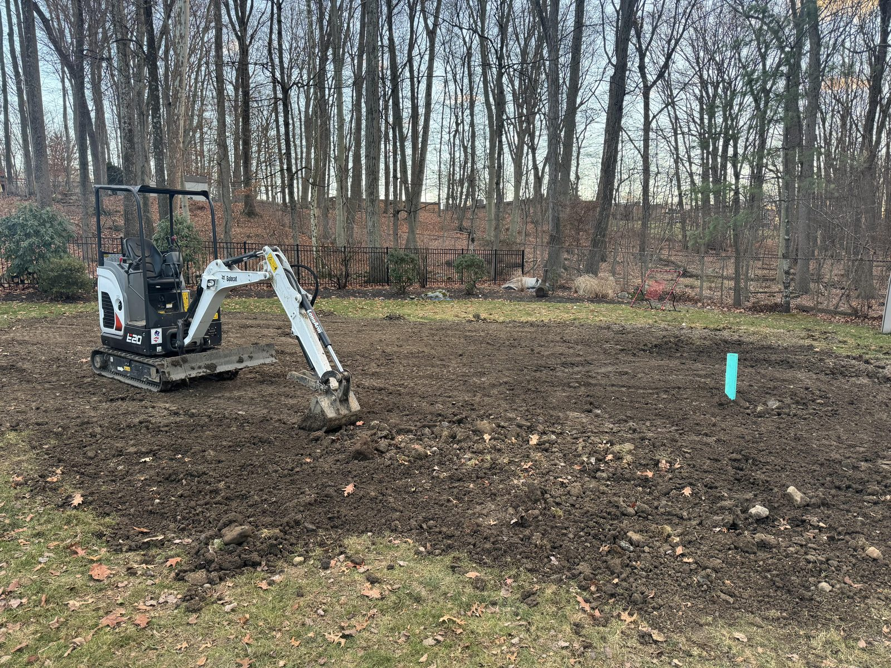
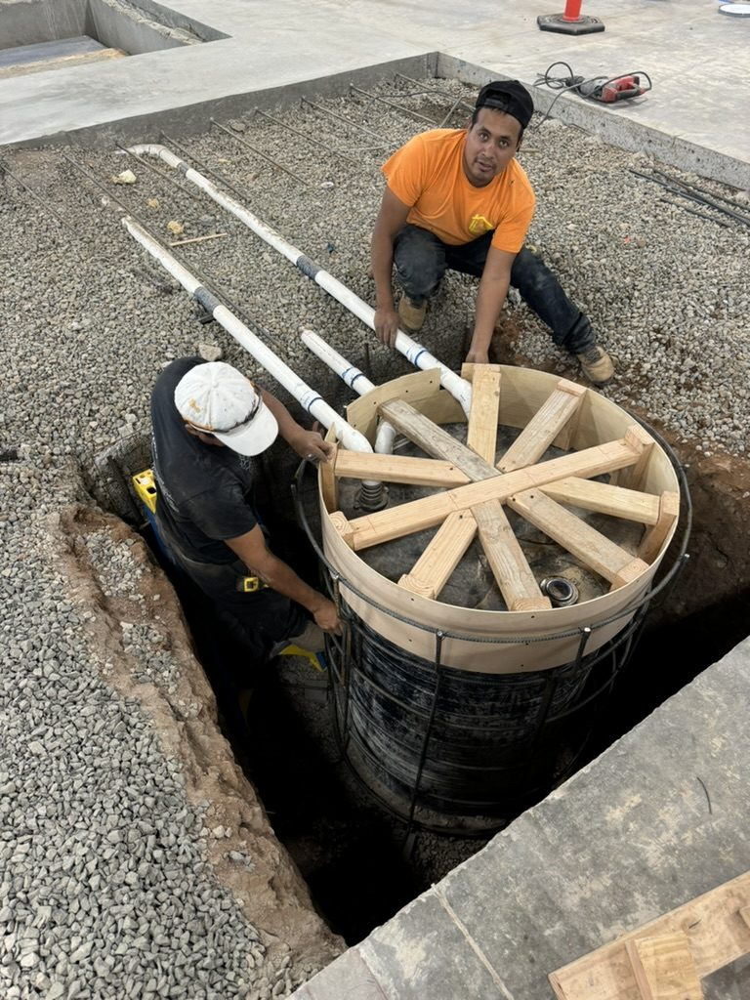
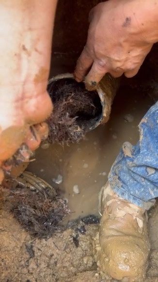
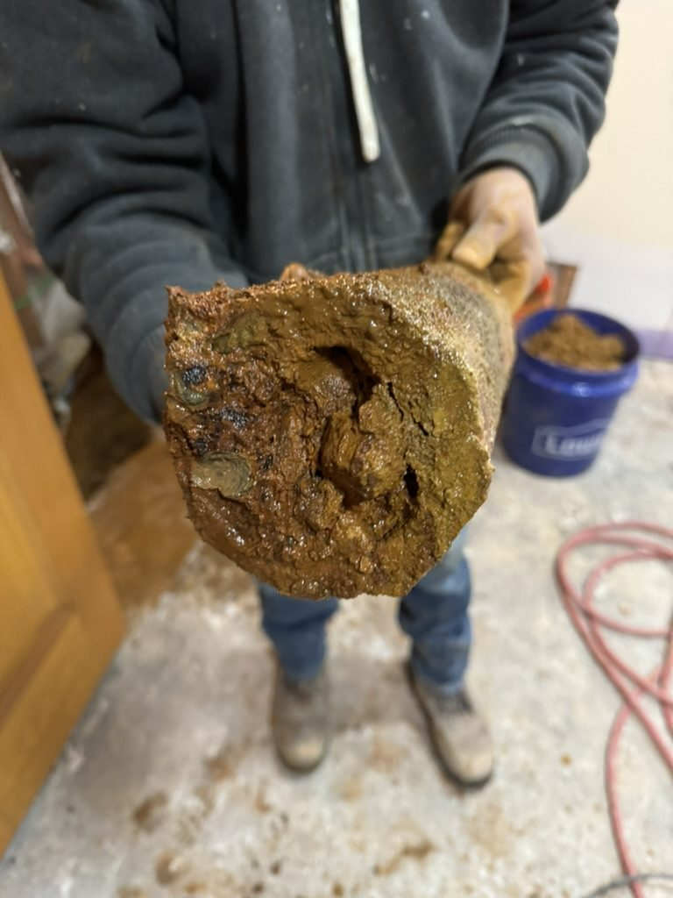

Waterproofing in Livingston, priced in writing up front
The short drive from Livingston to our West Caldwell office is worth it, and most of our work comes directly to you.
In Livingston we handle interior french drains, foundation waterproofing, sump pumps.
- Same-day emergency service
- 100% lifetime guarantee
- NJ licensed and insured
- 12% military and first responder discount
Call or text (917) 691-8411. Open 24 hours, and you hear back within the hour.
What Livingston Homeowners Are Actually Dealing With
When a homeowner near Riker Hill Art Park calls us after a heavy rain, the problem usually isn’t a single crack or a failed sump pump in isolation. It’s a system that was never sized for Livingston’s specific drainage demands. The soil holds water. The storms come fast and hard. And the standard builder-grade sump pump that came with the house in 1987 wasn’t engineered for a basin that fills in 20 minutes during a summer downpour.
What we handle in Livingston
Every item below is work ARD does in house, on the same estimate. Open any one for the full service page.
Interior French Drain Installation for Livingston’s Clay-Heavy Soil
perimeter channel systems sized for the volume of hydrostatic pressure Essex County storms generate, not a one-size-fits-all trench depth
See the full service →02Exterior Excavation and Moisture Barriers for Livingston Foundation Walls
full exterior waterproofing for homes where interior management alone won’t stop the source
See the full service →03Sump Pump Sizing and Battery Backup Installation for Livingston Basements
correctly sized basins and backup systems built for the short-cycling risk during the torrential downpours that hit the Canoe Brook and Memorial Park areas
See the full service →04Epoxy and Polyurethane Crack Injection for Livingston Foundations
targeted injection for active cracks before they widen through another freeze-thaw season
See the full service →See all 5 servicesShow less
Neighborhoods we serve in Livingston
What New Jersey homeowners say
"He came out within 24 hours, had a detailed estimate for me that evening that didn't just explain what they were going to do but why it was required, and ARD completed the job shortly after that (1.5 days to do the work). The lifetime warranty made me feel extra confident that they knew what they were doing."
"We worked with the ARD Waterproofing Company to install French Drains and a sump pump when our basement flooded numerous times. ARD was extremely helpful, professional and efficient. The project was completed in the time promised and we are happy with the results."
"Everything went incredibly well. Men who worked on the job were skilled and respectable. The owner of the company Was easy to deal with, honest , Personable, I recommend 100%."
Other New Jersey towns we waterproof
Waterproofing and foundation drainage across West Essex, Union, Passaic and Morris Counties, dispatched from Smull Ave in West Caldwell.
Do not see your town? We cover all of West Essex, Union, Passaic and Morris Counties. Call and ask.
Recent waterproofing and drainage work near Livingston






Common questions about waterproofing in Livingston
How can I tell if my basement moisture is condensation or actual foundation seepage from Livingston's clay soil?
The test is straightforward: tape a piece of plastic sheeting to the damp wall section, seal all four edges, and leave it for 24 hours. If moisture appears on the wall side of the plastic, water is migrating through the foundation, a direct result of hydrostatic pressure from Livingston's clay-heavy soil holding rainwater against your foundation walls.
Why do some contractors recommend exterior excavation while others push interior French drains for Livingston basements?
Both are legitimate solutions, but they work differently and suit different conditions. In Livingston's clay-dominant soil, exterior excavation addresses the source, it installs a waterproof membrane against the foundation wall and a drainage layer that redirects water before it ever contacts the structure.
What happens to the water after it enters an interior perimeter drainage system in a Livingston home?
The interior channel system collects water at the base of the foundation wall, the point where hydrostatic pressure forces moisture through, and directs it through a perimeter trench to the sump basin.
How long does a primary sump pump last, and why do Livingston homes burn through them faster than expected?
A properly sized primary sump pump typically runs 7 to 10 years under normal operating conditions. Livingston homes with undersized basins short-cycle during heavy storms, the pump activates, the basin refills within seconds, and the pump activates again.
Does waterproofing a Livingston basement from the inside actually stop water from damaging the foundation walls?
Interior drainage manages water at the perimeter, it prevents flooding of your finished basement space, but it does not stop hydrostatic pressure from acting on the foundation wall itself.